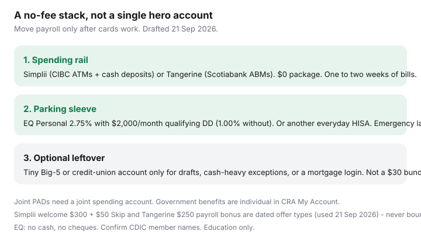

Personal Finance · Canada
Simplii vs Tangerine vs EQ Bank: Build a No-Fee Canadian Banking Stack
A $16.95 monthly chequing package is $203 a year before NSF, Interac fees, and the “unlimited debit” you already get for $0 at a digital bank. Households stay because the comparison feels like a product review and because payroll, PADs, and a mortgage login all live at the same Big-5. The fix is a stack: one no-fee spending account that matches how you take out cash, plus a HISA parking sleeve, plus — only if you need it — a tiny Big-5 leftover for branch edge cases.
Simplii (CIBC’s digital brand), Tangerine (Scotiabank’s), and EQ Bank (Equitable Bank) are the usual Canadian no-fee trio. Features below are from public pages used 21 Sep 2026. Welcome bonuses change; treat them as offer types, not a promise.
Disclosure: No-fee chequing and HISA accounts are offer types. Saving Optimizer may later add partner links. We do not currently claim Simplii, CIBC, Tangerine, Scotiabank, or EQ Bank partnerships, and we do not invent live switching bonuses. Education only — not a bank recommendation.
Key takeaways
- Simplii and Tangerine are everyday chequing with Big-5 ATM networks (CIBC ~3,400+; Scotiabank thousands). EQ is a hybrid that pays interest (2.75% with $2,000+/month qualifying DD; 1.00% without) and rebates ATM fees instead of owning machines.
- Simplii is the cash-deposit winner (CIBC ATMs). EQ does not take cash or issue cheques. Tangerine cash deposits are limited versus Simplii.
- Park emergency cash where the everyday rate lives (often EQ or another HISA). Do not leave the buffer in a 0% chequing account “for convenience.”
- Keep a small Big-5 account only for a documented edge case: in-branch draft, cash-heavy side hustle, or a product that will not PAD from a digital bank. Do not keep the $16.95 package “just in case.”
- Joint PADs need a joint account at the spending bank. Open it before you move hydro.
Chequing needs: ATM networks (CIBC/Scotia) vs EQ card reality
| Simplii No Fee Chequing | Tangerine chequing | EQ Bank Personal Account | |
|---|---|---|---|
| Monthly fee | $0, no min balance | $0, no min balance | $0, no min balance |
| ATM | Free CIBC network (~3,400+). Non-CIBC: Simplii fee plus operator (public roundups cite $1.50 Simplii + operator). | Free Scotiabank ABMs; Global ATM Alliance abroad on many explainers | No branded network. EQ reimburses Canadian ATM surcharges up to $5, 5×/month |
| Cash in | Yes — CIBC ATM cash and cheque deposit | Limited (not Simplii-class ATM envelopes) | No cash deposits (EQ: “not right if you need to deposit cash”) |
| Card | Debit Mastercard | Debit card on Scotiabank rails | EQ Bank Card (preload/spend; 0.5% cash back cited in 2026 reviews — confirm on EQ) |
| Interest on chequing | Not the point (near-zero) | Not the point (near-zero) | 1.00% or 2.75% with qualifying DD |
| Cheques / drafts | Digital-first; confirm cheque needs | Digital-first | No cheques, no drafts, no in-branch |
| CDIC | Yes (Simplii / CIBC family — confirm member name on CDIC search) | Tangerine Bank member | Equitable Bank member; aggregated with Equitable deposits |

If you withdraw cash weekly at a CIBC machine in a grocery vestibule, Simplii is the spending account. If you live near Scotiabank ABMs or already have Scene+, Tangerine is the spending account. If you almost never need cash and payroll can move, EQ can be both spending and parking — until you need a bank draft for a used-car private sale.
Interac, bill pay, and e-Transfer limits that matter monthly
All three advertise free Interac e-Transfers for everyday use. Limits still matter when you send a rent e-Transfer or a lawyer’s deposit:
- EQ outbound: $5,000 per 24 hours, $20,000 weekly, $50,000 monthly. Inbound e-Transfer $25,000 per transaction. EFT to a linked bank: $30,000 outbound per transaction (EQ fees-and-features).
- Wealthsimple (if you add it to the stack): daily e-Transfer “up to $50,000 for eligible clients” — useful for a house deposit, irrelevant for groceries.
- Simplii / Tangerine: limits are in-app and can be raised. Screenshot yours before you move a large PAD. Unlimited free e-Transfers is not the same as an unlimited dollar cap.
Bill pay: EQ, Simplii, and Tangerine all do Canadian bill pay including CRA in typical setups. EQ cites up to $100,000 per CRA payment depending on the biller. Test one small CRA instalment before you close the old bank.
Simplii overdraft: public page used 21 Sep 2026 — $4.97 in the month you use it plus 19% interest, limits up to $5,000 if you qualify. That is a short-term NSF shield, not a plan. A $500 HISA buffer is cheaper than a habitual overdraft.
HISA parking attached to each ecosystem
Simplii High-Interest Savings: Ratehub 21 Sep 2026 listed 4.60% for the first 5 months. Everyday rate after the promo is the number that matters for an emergency fund — verify on simplii.com. Tangerine Savings: 4.50% first 5 months on the same table. EQ Personal: 2.75% everyday with payroll, plus notice savings at 2.35% / 2.75%.
A clean stack for a CIBC-ATM household: Simplii chequing (float) + EQ Personal (buffer) + optional Simplii HISA only while a teaser runs, then empty it back to EQ. Do not run rent from the teaser HISA. Details in the parking framework and the habit matrix.
When to keep a tiny Big-5 account for branch edge cases
Keep one if you have a documented need: bank draft same day, night-deposit for cash, a safety-deposit box, a mortgage that is painful to move, or an employer that still insists on a specific bank for payroll (rare, push back). Downgrade the package to the cheapest account that still lets you walk in — often a “basic” or student/senior SKU, not the $30 unlimited bundle. Hold $100–$300 so it is not empty-and-closed by accident. Move payroll off it. The leftover is a tool, not a lifestyle.
Do not keep the full-fee package because “we might buy a house.” Drafts for closings can be ordered from digital banks with lead time (Wealthsimple documents mailed drafts) or from a credit union appointment. Plan the draft; do not pay $200/year for a hypothetical.
Joint accounts and shared household PADs
Hydro, internet, and the joint Visa need one account both people can see. Open a joint Simplii, Tangerine, or EQ Joint Account (EQ Joint posts the same 1.00% / 2.75% structure) before you change PAD forms. Two personal accounts and a spreadsheet is how a PAD bounces while someone is away. CDIC: joint deposits are a separate category from deposits in one name, still $100,000 per set of joint owners at that member — useful, not a reason to over-concentrate.
Government deposits (CCB, GST/HST credit, OAS) are individual. Each adult updates CRA direct deposit in My Account. Do not assume a joint account automatically catches a spouse’s benefit.
Migration sequence that avoids missed payroll
- Open the new spending account and the parking HISA. Order cards. Wait until you can sign in and send a $10 e-Transfer to yourself.
- Move payroll and government direct deposit first. Keep the old account open.
- Rewrite PADs one vendor at a time (rent, then insured bills, then subscriptions). Use the 14-day plan so two billing cycles overlap.
- Only then drain the old package. Confirm CDIC at the new members with CDIC’s search tool.
Simplii’s public welcome offer on 21 Sep 2026 advertised $300 plus a $50 Skip gift card for new clients with eligible direct deposits of $100+ for three straight months. Tangerine advertised a $250 payroll switch bonus for qualifying new clients (client numbers through 31 Oct 2026). Those are types of switching promos — they expire. Never time a rent PAD around a bonus that has not cleared.
Sources & date stamps
- Simplii No Fee Chequing page — $0 fees, CIBC ATM access, $300 + $50 Skip welcome (eligible DD $100+ × 3 months), overdraft $4.97 + 19% (used 21 Sep 2026).
- EQ Bank Personal Account, rates (16 Sep 2026), fees-and-features — 2.75% DD gate, ATM rebate, e-Transfer limits, no cash/cheques, Joint Account rates, Equitable Bank CDIC.
- Tangerine.ca — $250 new-client payroll offer terms; Scotiabank-brand ATM story from public roundups plus Tangerine product pages.
- Ratehub.ca HISA table 21 Sep 2026 — Simplii 4.60% first 5 months; Tangerine 4.50% first 5 months; EQ 2.75%.
- FCAC transferring products/services — open new first, keep old during the transfer (used as sequence, not a 14-day legal deadline).
Frequently asked questions
Can I drop my Big-5 account entirely?
Yes if you do not need cash deposits, same-day drafts, or an in-person exception your digital bank cannot do. Many households keep a cheap leftover with a few hundred dollars. Do not keep a $15–$30 package for nostalgia.
Simplii or Tangerine for everyday spending?
Pick the ATM network you actually use: CIBC machines and cash deposits → Simplii; Scotiabank ABMs and Scene+ → Tangerine. Interest on those chequing accounts is not the product. Park savings at EQ or another everyday HISA.
Is EQ enough as the only account?
If payroll can land there, you rarely need cash, and you can live without cheques and drafts. EQ is explicit that the Personal Account is a poor fit if you need those. Pair it with Simplii or Tangerine when cash is part of the month.
What about joint bills?
Open a joint no-fee account and point household PADs there before you close anything. EQ offers a Joint Account with the same bonus-rate structure. Government benefits stay on each person’s CRA direct-deposit settings.
Should I chase Simplii’s $300 welcome bonus?
Only if the account also fits ATMs and cash. Simplii advertised $300 plus a $50 Skip card on 21 Sep 2026 with three months of eligible $100+ direct deposits. Treat it as a dated offer type. Never bounce rent to hit a bonus.